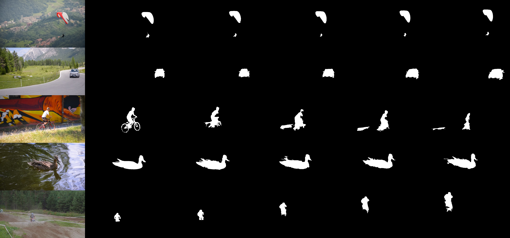
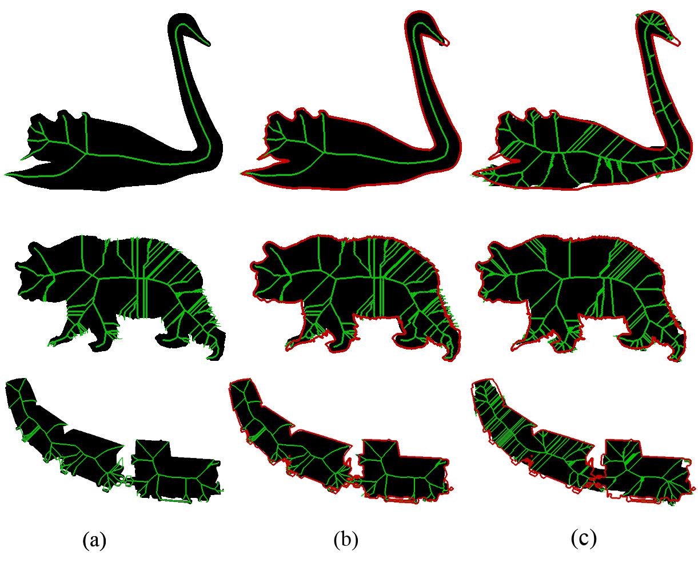

Skeletonization Combined with Deep Neural Networks
for Superpixel Temporal Propagation
Ádám Fodor, Áron Fóthi, László Kopácsi, Ellák Somfai, András Lőrincz

Abstract
Medial axis representation (a.k.a. shape skeleton) seems to be present in visual processing, but its relevance has remained unclear. Here, we show the potentials of the medial axis transformation in the temporal propagation of superpixels. We combine (i) state-of-the-art deep neural network ‘sensors’ for optical flow and for depth estimation and (ii) a superpixel algorithm with (iii) the medial axis transformation to obtain frame-to-frame propagation of visual objects. We study the precision of this deep learning facilitated superpixel temporal propagation. We discuss the advantages of the method compared to the temporal propagation of the superpixels themselves.
- Temporal propagation of superpixels for video object segmentation using shape skeletons.
- Noisy optical flow can degrade temporal propagation accuracy.
- Precise superpixel segmentation and object boundary preservation are critical.
- Handling occlusions and irregularities in shape boundaries complicate skeletonization.
- Efficient and robust methods are needed to propagate object masks accurately across video frames.
- Combine deep neural networks for optical flow (PWC-Net) and depth estimation (MegaDepth) with medial axis (shape skeleton) transformation.
- Use Borůvka’s minimum spanning tree algorithm for hierarchical superpixel segmentation.
- Two skeleton-based temporal propagation strategies:
- Multi-skeleton: propagate skeletons of individual superpixels and use them as seeds to label next frame.
- Single-skeleton: propagate the skeleton of the entire object mask using optical flow, create a draft mask with disks around skeleton points, and refine with superpixel segmentation.
- Refine propagation using optical flow and depth information, and enhance edges via deep networks.
- Both skeleton-based methods significantly outperform baseline methods without skeletons.
- The single-skeleton method achieves the best results, exceeding 50% accuracy on intersection over union (IoU) and boundary accuracy on the DAVIS 2016 benchmark.
- Using Lab color space and adding depth information moderately improves performance.
- Occlusions remain a challenge; performance improves notably on occlusion-free videos.
- The combined approach is biologically inspired and offers a promising, parallelizable, and efficient solution for video propagation tasks, with room for future extensions to handle occlusions better.
Visualization


BibTex
If you found our research helpful or influential please consider citing:
@INPROCEEDINGS{fodor2019skeletonization,
author = {Fodor, Ádám and Fóthi, Áron and Kopácsi, László and Somfai, Ellák and Lőrincz, András},
booktitle = {2019 International Joint Conference on Neural Networks (IJCNN)},
title = {Skeletonization Combined with Deep Neural Networks for Superpixel Temporal Propagation},
year = {2019},
pages = {1-7},
doi = {10.1109/IJCNN.2019.8852391}
}